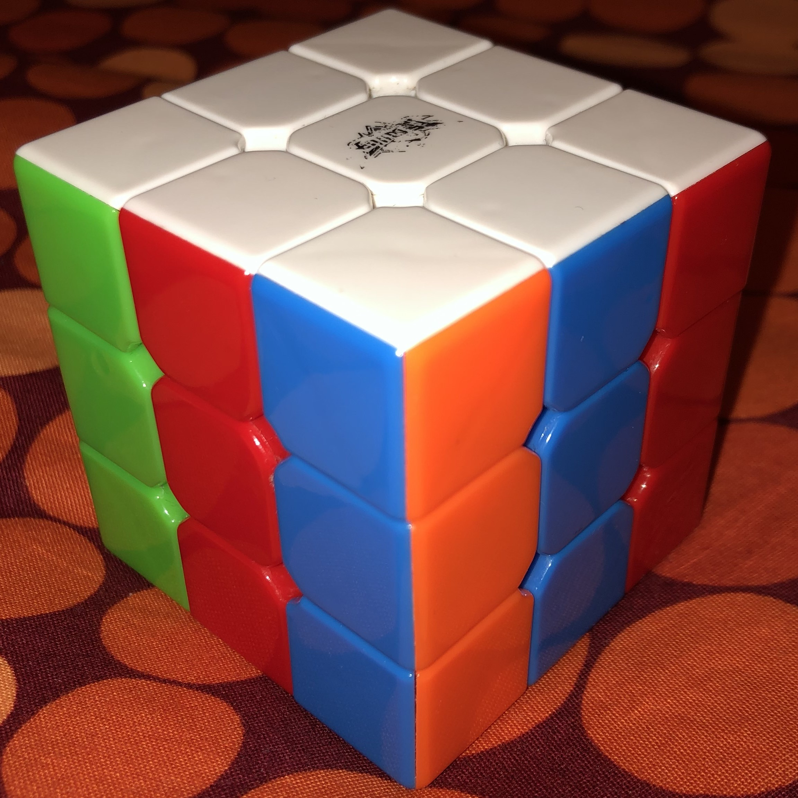
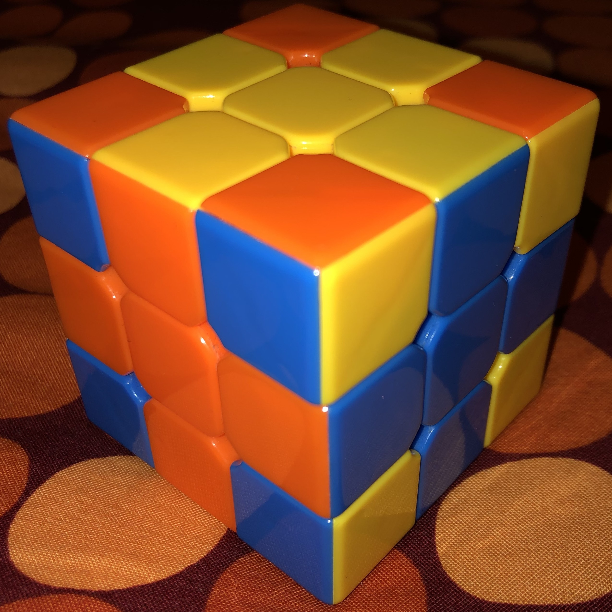

This is a collection of nice patterns to make your cube look cool.
In this section you can find some algorithms that will create a cool pattern in your cube. You might know some classic common ones, but we included some others that are not so simple to get and, therefore, less known.
| Case | Algorithm | Comments |
|---|---|---|
| F2B2L2R2U2D2 | The classic among the classics. You probably already know this one. | |
| FB2R'D2BRUD'RL'D'F'R2DF2B' | The same cross pattern but with adjacent colors. If you execute the algorithm a second time you will get another combination of colors. | |
| D2F2U2B2F2U2F2U2 | Again the cross pattern but this time only in two opposed faces. | |
| LR'DU'BF'LR' | Another classic, and one of the coolest ones. If you execute the algorithm a second time you will get another combination of colors. | |
| D2U2BF'L2R2F'B | The same as the previous one but only in four faces of the cube. | |
| D'R2F2D2F2R2D2R2DU'R2U' | This is one of the S patterns. | |
| D'L2B2U2F2R2U2L2D'UR2U' | Another S pattern | |
| L2F2L2R2F2R2 | Another classic, very easy to find out on your own. | |
|  | FUFRL2BD'RD2LD'BR2LFUF | It's like the previous one but without keeping the right order in the columns. |
| DF2R2F2D'UR2F2R2U' | There is a symbol in four faces of the cube, combining opposite colors. | |
| UFB'L2U2L2F'BU2L2U | There is a symbol in each face of the cube, not opposite colors this time. | |
|  | R2L'DF2R'D'R'LU'DRDB2R'UD2 | The last (and the best) of the patterns.This time we get two cycles of three colors. |
| DB2L2B2DU'R2F2R2U' | You can see an H in four of the six faces. | |
| UB2D2LB'L'U'L'BD2B2 | This one is a little weird. There are two rectangles and one square in every face composed of six, two and one tiles, respectively. | |
| FLFU'RUF2L2U'L'BD'B'L2U | Look! There is a little cube inside your cube! | |
| F'UB'R'UF2U2F'U'FU2DB'D'R2B2U' | Look! There is a little cube inside the little cube inside your cube!. |
| Case - Algorithm - Comments |
|---|
| Cross Pattern |
| F2B2L2R2U2D2 |
| The classic among the classics. You probably already know this one. |
| Cross Pattern 2 |
| FB2R'D2BRUD'RL'D'F'R2DF2B' |
The same cross pattern but with adjacent colors. |
| Cross Pattern One Face |
| D2F2U2B2F2U2F2U2 |
| Again the cross pattern but this time only in two opposed faces. |
| 6 dots |
| LR'DU'BF'LR' |
Another classic, and one of the coolest ones. |
| 4 dots |
| D2U2BF'L2R2F'B |
| The same as the previous one but only in four faces of the cube. |
| Pattern S |
| D'R2F2D2F2R2D2R2DU'R2U' |
| This is one of the S patterns. |
| Pattern S 2 |
| D'L2B2U2F2R2U2L2D'UR2U' |
| Another S pattern |
| Columns |
| L2F2L2R2F2R2 |
| Another classic, very easy to find out on your own. |
| Columns 2 |
| FUFRL2BD'RD2LD'BR2LFUF |
| It's like the previous one but without keeping the right order in the columns. |
| Pattern |
| DF2R2F2D'UR2F2R2U' |
| There is a symbol in four faces of the cube, combining opposite colors. |
| Pattern 2 |
| UFB'L2U2L2F'BU2L2U |
| There is a symbol in each face of the cube, not opposite colors this time. |
| Pattern 3 |
| R2L'DF2R'D'R'LU'DRDB2R'UD2 |
The last (and the best) of the patterns.This time we get two cycles of three colors. |
| Pattern H |
| DB2L2B2DU'R2F2R2U' |
| You can see an H in four of the six faces. |
| Pattern 6-2-1 |
| UB2D2LB'L'U'L'BD2B2 |
This one is a little weird. There are two rectangles and one square in every face composed of six, two and one tiles, respectively. |
| Cube in Cube |
| FLFU'RUF2L2U'L'BD'B'L2U |
| Look! There is a little cube inside your cube! |
| Cube in Cube in Cube |
| F'UB'R'UF2U2F'U'FU2DB'D'R2B2U' |
Look! There is a little cube inside the little cube inside your cube!. |